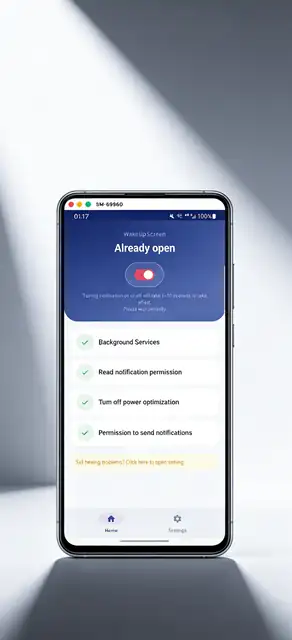
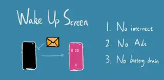

WakeUpScreen
أدوات النظام
WakeUpScreen is an open-source Android app that gently wakes your display the moment a notification arrives. No cloud, no clutter, no compromise. Features: • Instant Wake — Your screen lights up the moment a notification arrives. Never miss what matters while your phone sits on the desk. • Pocket Mo
✓ ترخيص مفتوح (GPL-3.0-only) · آخر تحديث: 2026-10-03
4.3.1الإصدار
3.5 MBالحجم
GPL-3.0-onlyالرخصة
Open in Kanzتحميل APK (3.5 MB)
Download APK
SHA-256: b0ac2d94c1860afa1c88c0e4930ab96cf4e2dabb30a21d9eacf30e5da940bbf8


امسح الكود لفتح صفحة التطبيق
Scan to open this app page
لو كنز مش متثبت عندك: نزّل متجر كنز.
Not installed? Get the Kanz store.